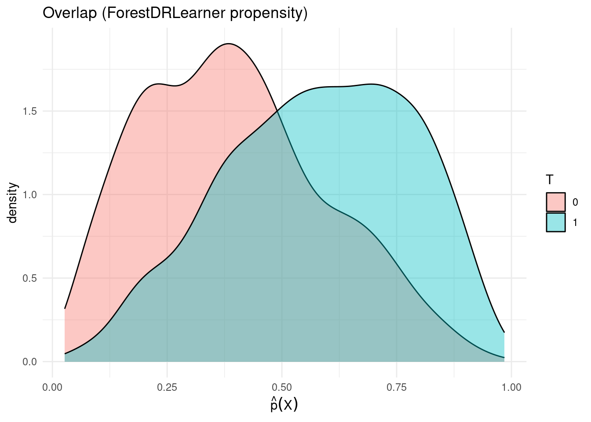
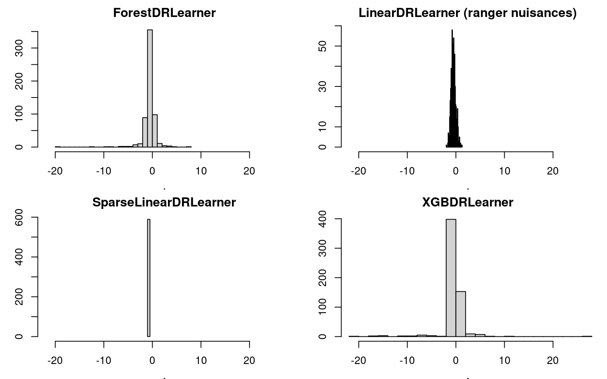
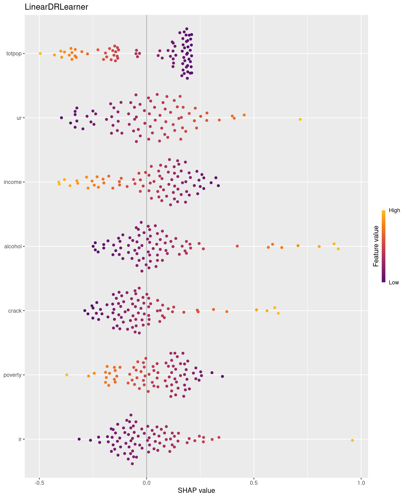
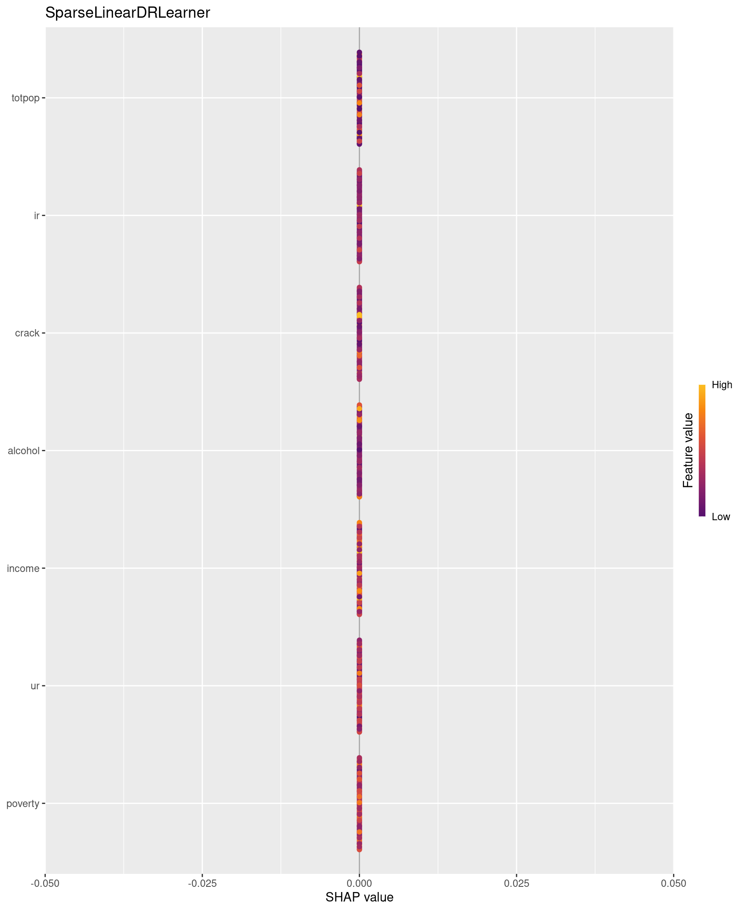
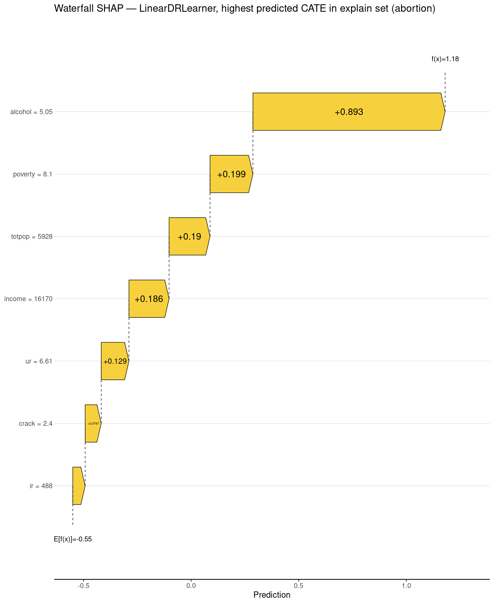

Code
packages <- c(
"RCausalML",
"ggplot2"
)
Doubly robust (DR) learning estimates heterogeneous treatment effects (CATE) in observational studies by combining treatment-specific outcome models and propensity scores, then fitting a final-stage model for \(\tau(X)\). This notebook gives the statistical background, contrasts DR learning with double machine learning (DML), and shows RCausalML implementations: DR meta-learners live in R/meta_learners.R (DRLearner and special cases); DML estimators live in R/DMLearner.R (DMLearner, LinearDML, CausalForestDML, and related constructors).
The Doubly Robust Learner (DR-Learner) is a meta-learner for estimating the Conditional Average Treatment Effect from observational data with discrete treatments. It belongs to the family of doubly robust estimators: by combining an outcome model with a propensity score model, it remains consistent if either — but not necessarily both — is correctly specified. When both nuisance models converge at sufficiently fast rates, the DR-Learner achieves \(\sqrt{n}\)-consistency and asymptotic normality for the CATE, enabling valid confidence intervals and hypothesis tests that are not available from standard meta-learners.
The DR-Learner applies when:
The target estimand for each active arm \(t \geq 1\) is the contrast against control:
\[\tau_t(x) = \mathbb{E}[Y(t) - Y(0) \mid X = x]\]
The DR-Learner requires two nuisance objects, both estimated using flexible ML algorithms:
A critical implementation detail is cross-fitting (also called sample splitting), which RCausalML performs with 3-fold rotation by default, following Kennedy (2020). The sample is partitioned into \(K\) folds; for each fold, the nuisance models are trained on the remaining \(K-1\) folds and used to construct pseudo-outcomes on the held-out fold. This rotation ensures that the observations used to fit the nuisance models are never the same ones used to construct pseudo-outcomes or fit the final CATE model. Without cross-fitting, reusing the same observations for all three stages introduces optimistic bias that invalidates inference.
Using the estimated nuisance functions, a doubly robust pseudo-outcome is constructed for each unit and each contrast \(t\) vs. \(0\):
\[\hat{\phi}_i^t = \hat{g}_t(X_i, W_i) - \hat{g}_0(X_i, W_i) + \frac{\mathbf{1}[T_i = t]\left(Y_i - \hat{g}_t(X_i, W_i)\right)}{\hat{p}_t(X_i, W_i)} - \frac{\mathbf{1}[T_i = 0]\left(Y_i - \hat{g}_0(X_i, W_i)\right)}{\hat{p}_0(X_i, W_i)}\]
The pseudo-outcome \(\hat{\phi}_i^t\) is an unbiased unit-level estimate of \(\tau_t(X_i)\) under the doubly robust identification condition. Its key property is that the bias of \(\hat{\phi}_i^t\) as an estimator of the true effect depends on the product of the outcome model error and the propensity score error — rather than on either error alone. This means that moderate misspecification of one nuisance function is tolerable provided the other is well-estimated, a substantially weaker requirement than demanding both to be correct simultaneously.
The CATE function \(\tau_t(x)\) is recovered by regressing the pseudo-outcomes \(\hat{\phi}_i^t\) on the covariates \(X_i\):
\[\hat{\tau}_t = \arg\min_f \sum_{i} \left(\hat{\phi}_i^t - f(X_i)\right)^2\]
Any regression algorithm may be used for this final stage. The choice determines the structural assumptions imposed on \(\tau_t(x)\), the dimensionality that can be handled, and the type of inference available. RCausalML provides four specialized implementations that differ along exactly these dimensions.
DRLearner (Base Class)The base DRLearner imposes no structural assumptions on the CATE function. Any scikit-learn-compatible regressor or classifier may be used for the nuisance models, and any regressor may be used for the final stage. This makes it a fully general-purpose estimator suitable for exploratory analysis when the form of treatment effect heterogeneity is unknown. Valid confidence intervals are available when cross-fitting is enabled, subject to the convergence conditions of the chosen base learners.
Best for: Exploratory CATE estimation with custom model choices; no prior assumptions on functional form.
LinearDRLearnerLinearDRLearner specializes the final stage to an unregularized linear regression of the pseudo-outcomes on \(X\), imposing the assumption that
\[\tau_t(x) = x^\top \beta_t\]
The linearity assumption enables asymptotic normality-based inference: closed-form standard errors, confidence intervals, and p-values for the coefficients \(\hat{\beta}_t\) are available without resampling. This is the most interpretable variant and the most statistically efficient when the linearity assumption holds, but it fails — both in estimation accuracy and in inference validity — when the true CATE is nonlinear or when the number of features approaches the sample size.
Best for: Low-dimensional settings (\(p \ll n\)) where linear treatment effect heterogeneity is plausible and coefficient-level interpretability is required.
SparseLinearDRLearnerSparseLinearDRLearner extends the linear final stage to high-dimensional settings where the number of features may equal or exceed the sample size. It uses a debiased Lasso (\(\ell_1\)-regularized regression with a post-regularization debiasing correction) in the final stage, which simultaneously performs feature selection and produces asymptotically normal coefficient estimates under a sparsity assumption on \(\beta_t\). The debiasing step is essential: naive Lasso estimates are shrunk toward zero in a way that invalidates standard inference, and the correction removes this shrinkage bias for the purpose of hypothesis testing.
Best for: High-dimensional settings (\(p \geq n\)) where treatment effect heterogeneity is driven by a sparse subset of covariates and both feature selection and valid inference are required.
ForestDRLearnerForestDRLearner uses a subsampled honest random forest in the final stage, replacing the linear model with a fully nonparametric estimator. Honesty — the use of separate subsamples for tree construction and leaf-level estimation — is a key property that prevents the forest from overfitting the pseudo-outcomes and ensures asymptotic validity of the resulting estimates. Confidence intervals are constructed via the Bootstrap-of-Little-Bags (BLB) procedure, a computationally efficient resampling method for variance estimation in subsampled forests.
Best for: Moderate-to-high dimensional settings with complex, nonlinear treatment effect heterogeneity where no linearity or sparsity is assumed and forest-based uncertainty quantification is acceptable.
XGBDRLearnerXGBDRLearner uses XGBoost gradient boosting in the final stage. It can capture complex interactions and high-order nonlinearities in \(\tau_t(x)\) and typically achieves strong predictive performance. The trade-off is inferential: formal confidence intervals for the CATE function are not directly available from gradient boosting, and uncertainty quantification requires approximations such as SHAP-based sensitivity analysis or permutation importance.
Best for: Settings where predictive accuracy of the CATE is the primary objective and approximate rather than formal uncertainty quantification is acceptable.
| Aspect | DRLearner |
LinearDRLearner |
SparseLinearDRLearner |
ForestDRLearner |
|---|---|---|---|---|
| Final stage | Any regressor | Unregularized OLS | Debiased Lasso | Honest random forest |
| CATE assumption | None | Linear in \(X\) | Linear, sparse in \(X\) | None (nonparametric) |
| Dimensionality | Depends on base learner | \(p \ll n\) | \(p \geq n\) supported | Moderate-to-high |
| Inference | Valid with cross-fitting | Asymptotic normality | Asymptotic normality (debiased) | BLB resampling |
| Interpretability | Low–high (model-dependent) | High (coefficients) | High (sparse coefficients) | Low |
| Best for | Exploratory, custom pipelines | Low-dim linear effects | High-dim sparse effects | Nonlinear effects |
The DR-Learner and the Double Machine Learning estimator (DML; Chernozhukov et al., 2018) share the same high-level goals — debiased CATE estimation under high-dimensional confounding — but differ in their construction, treatment scope, and robustness properties.
The DR-Learner constructs arm-specific outcome models \(\hat{g}_t(X, W)\) and uses inverse-propensity weighting to debias counterfactual predictions. The doubly robust property provides robustness to misspecification of one nuisance component. DML instead residualizes both the outcome and the treatment against their conditional expectations — \(\tilde{Y} = Y - \hat{\mathbb{E}}[Y \mid X, W]\) and \(\tilde{T} = T - \hat{\mathbb{E}}[T \mid X, W]\) — and regresses \(\tilde{Y}\) on \(\tilde{T}\) and covariates. This Neyman-orthogonal construction means that bias in the final CATE estimate depends on the product of errors in both nuisance models, providing robustness to misspecification of either, but refined inference requires both to converge at adequate rates.
| Aspect | DR-Learner | DML |
|---|---|---|
| First-stage outcome | Arm-specific \(\hat{g}_t(X, W)\) | Marginal \(\hat{\mathbb{E}}[Y \mid X, W]\) (residualized) |
| Robustness | Doubly robust (discrete \(T\)) | Neyman-orthogonal (both nuisances matter for inference) |
| Treatment types | Discrete (binary or multi-arm) | Binary, continuous, and multivariate \(T\) |
| RCausalML entry points |
DRLearner, LinearDRLearner, … |
DMLearner, LinearDML, CausalForestDML, … |
Prefer the DR-Learner when the treatment is categorical, arm-specific outcome modeling is natural, and EconML/causalml methodological parity is desired. Prefer DML when the treatment is continuous or multivariate, a residualization-based pipeline is preferred, or the CausalForestDML combination of DML first stages with grf::causal_forest is the target estimator.
The {RCausalML} package exports the following DR constructors:
| R constructor | Role | Final-stage learner (default) |
|---|---|---|
DRLearner() |
General DR meta-learner | Same base learner for nuisances and \(\tau\) (learner: "lm", "glmnet", "ranger", "xgb") |
LinearDRLearner() |
Linear CATE on \(X\) | OLS ("lm"); flexible nuisances (model_regression, model_propensity) |
SparseLinearDRLearner() |
High-dimensional / sparse linear CATE |
glmnet (Lasso-style) |
ForestDRLearner() |
Nonparametric \(\tau(X)\) |
ranger for all stages |
XGBDRLearner() |
Gradient boosting |
xgboost for all stages |
Use fit(obj, X, treatment, y, ...), predict(obj, newdata, ...), and estimate_ate(obj, X, treatment, y, ...) (generic estimate_ate dispatches to DR or DML methods as appropriate).
Useful arguments: control_name (default 0), n_fold (default 3; internally capped to 3 for the DR rotation), seed, ate_alpha. For DRLearner, you can set control_outcome_learner, treatment_outcome_learner, and treatment_effect_learner separately. Ellipsis ... is passed to ranger, xgboost, etc.
For linear DR learners, coef() and intercept() summarize the final-stage slopes and intercept (averaged across cross-fitting folds where applicable).
Following R packages are required to run this notebook. If any of these packages are not installed, you can install them using the code below:
RCausalML, ggplot2
packages <- c(
"RCausalML",
"ggplot2"
)# Install missing packages
# new_packages <- packages[!(packages %in% installed.packages()[, "Package"])]
# if (length(new_packages)) install.packages(new_packages)# Load packages with suppressed messages
invisible(lapply(packages, function(pkg) {
suppressPackageStartupMessages(library(pkg, character.only = TRUE))
}))# Check loaded packages
cat("Successfully loaded packages:\n")Successfully loaded packages:[1] "package:ggplot2" "package:RCausalML" "package:stats"
[4] "package:graphics" "package:grDevices" "package:utils"
[7] "package:datasets" "package:methods" "package:base" fast_run <- Sys.getenv("CAUSALML_FAST_RENDER", "TRUE") == "TRUE"Optional packages for the appendix: mlr3, grf, DoubleML, xgboost. Set CAUSALML_FAST_RENDER=FALSE for larger SHAP subsamples in Part B.
First we show examples of the DR learners in {RCausaML} on a shared synthetic data-generating process (DGP) with a binary treatment and linear CATE.
ForestDRLearner: random forest final stagedr_forest <- ForestDRLearner(control_name = 0L, n_fold = 3L, seed = 42)
dr_forest <- fit(dr_forest, X, treatment, Y, num.trees = 300L)
cate_forest <- predict(dr_forest, X)
ate_dr_f <- estimate_ate(dr_forest, X, treatment, Y, pretrain = TRUE, seed = 42)
cat("Mean predicted CATE:", round(mean(cate_forest), 4),
"| True mean CATE:", round(mean_ate_true, 4), "\n")Mean predicted CATE: 0.9742 | True mean CATE: 0.9875 estimate_ate (point, CI): 0.9742 [ 0.9226 , 1.0258 ]phat <- dr_forest$propensity[["1"]]
df_plot <- data.frame(
X1 = X_mod[, 1],
cate_hat = as.numeric(cate_forest),
true_cate = true_cate
)
df_ord <- df_plot[order(df_plot$X1), ]
ggplot(df_plot, aes(x = X1, y = cate_hat)) +
geom_point(alpha = 0.15, color = "steelblue") +
geom_smooth(se = TRUE, color = "darkblue", linewidth = 0.8) +
geom_line(aes(x = X1, y = true_cate), color = "black", linewidth = 0.4, alpha = 0.6, data = df_ord) +
labs(x = expression(X[1]), y = "Predicted CATE", title = "ForestDRLearner") +
theme_minimal()
Overlap check using fitted propensity:
ggplot(data.frame(p = phat, T = factor(treatment)), aes(x = p, fill = T)) +
geom_density(alpha = 0.4) +
labs(x = expression(hat(p)(X)), title = "Overlap (ForestDRLearner propensity)") +
theme_minimal()
LinearDRLearner: OLS final stage and coefficientsdr_lin <- LinearDRLearner(
model_propensity = "ranger",
model_regression = "ranger",
control_name = 0L,
n_fold = 3L,
seed = 42
)
dr_lin <- fit(dr_lin, X, treatment, Y, num.trees = 200L)
cate_lin <- predict(dr_lin, X)
cat("Mean predicted CATE (linear DR):", round(mean(cate_lin), 4),
"| True mean CATE:", round(mean_ate_true, 4), "\n")Mean predicted CATE (linear DR): 1.0153 | True mean CATE: 0.9875 # Final-stage linear CATE coefficients (slopes on columns of X)
cat("coef() — slopes:\n")coef() — slopes: X1 X2 X3 X4 X5 W1 W2 W3
0.7634 0.0291 -0.0418 0.0187 -0.0094 0.0107 -0.0133 0.0051 cat("intercept():\n")intercept():[1] 1.0285The simulation is linear in X1 only; other columns enter through confounding and may appear with small estimated slopes.
SparseLinearDRLearner: Lasso-style final stagedr_sparse <- SparseLinearDRLearner(
model_propensity = "ranger",
model_regression = "ranger",
alpha = 1,
control_name = 0L,
n_fold = 3L,
seed = 42
)
dr_sparse <- fit(dr_sparse, X, treatment, Y, num.trees = 200L)
cate_sparse <- predict(dr_sparse, X)
cat("Mean predicted CATE (sparse linear DR):", round(mean(cate_sparse), 4), "\n")Mean predicted CATE (sparse linear DR): 0.9714 cat("Non-zero coef() entries (approximate selection):\n")Non-zero coef() entries (approximate selection): X1 X2 X3 X4 X5 W1 W2 W3
0.1483 0.0000 0.0000 0.0000 0.0000 0.0000 0.0000 0.0000 XGBDRLearner (optional)Requires the xgboost package.
if (requireNamespace("xgboost", quietly = TRUE)) {
dr_xgb <- XGBDRLearner(control_name = 0L, n_fold = 3L, seed = 42)
dr_xgb <- fit(dr_xgb, X, treatment, Y, nrounds = 80L)
cate_xgb <- predict(dr_xgb, X)
cat("Mean predicted CATE (XGB DR):", round(mean(cate_xgb), 4), "\n")
}DRLearner: mix learners across stagesExample: flexible nuisances with a linear CATE surface.
dr_mixed <- DRLearner(
learner = "ranger",
control_outcome_learner = "ranger",
treatment_outcome_learner = "ranger",
treatment_effect_learner = "lm",
control_name = 0L,
n_fold = 3L,
seed = 42
)
dr_mixed <- fit(dr_mixed, X, treatment, Y, num.trees = 200L)
cate_mixed <- predict(dr_mixed, X)
cat("Mean predicted CATE (mixed DR):", round(mean(cate_mixed), 4), "\n")Mean predicted CATE (mixed DR): 0.9747 LinearDML (DML baseline for the comparison table)Mean predicted CATE (LinearDML): 0.9894 comparison <- data.frame(
method = c(
"True mean CATE",
"ForestDRLearner",
"LinearDRLearner",
"SparseLinearDRLearner",
"DRLearner (RF + lm tau)",
"LinearDML"
),
mean_CATE_or_target = c(
mean_ate_true,
mean(cate_forest),
mean(cate_lin),
mean(cate_sparse),
mean(cate_mixed),
mean(cate_dml_lin)
)
)
comparison$mean_CATE_or_target <- round(comparison$mean_CATE_or_target, 4)
print(comparison, row.names = FALSE) method mean_CATE_or_target
True mean CATE 0.9875
ForestDRLearner 0.9742
LinearDRLearner 1.0153
SparseLinearDRLearner 0.9714
DRLearner (RF + lm tau) 0.9747
LinearDML 0.9894We apply the same meta-learner API to the abortion dataset from causaldata (state–year units; outcome lnr, logged gonorrhea rate among 15–19 year olds; treatment is early repeal of abortion prohibition). We load the raw table with load_causaldata("abortion")$data, restrict to ages 15–19, and encode treatment as a binary factor with levels "Control" (no early repeal) and "Treated" (early repeal). Internally, RCausalML maps that factor to numeric codes (1 = Control, 2 = Treated with levels = c("Control", "Treated")), so every meta-learner below is constructed with control_name = 1L.
abortion <- load_causaldata("abortion")$dataabortion_clean <- abortion[abortion$age >= 15 & abortion$age <= 19, , drop = FALSE]
abortion_clean <- stats::na.omit(abortion_clean)
X_ab <- abortion_clean[, c("age", "race", "sex", "totpop", "ir", "crack",
"alcohol", "income", "ur", "poverty")]
y_ab <- abortion_clean$lnr
treatment_ab <- factor(
ifelse(abortion_clean$repeal == 0, "Control", "Treated"),
levels = c("Control", "Treated")
)
X_ab <- as.matrix(X_ab)
colnames(X_ab) <- c("age", "race", "sex", "totpop", "ir", "crack",
"alcohol", "income", "ur", "poverty")
X_ab <- X_ab[, apply(X_ab, 2, stats::var) > 1e-10, drop = FALSE]set.seed(333)
n_ab <- nrow(X_ab)
idx_tr <- sample.int(n_ab, size = floor(0.8 * n_ab))
X_ab_tr <- X_ab[idx_tr, , drop = FALSE]
y_ab_tr <- y_ab[idx_tr]
t_ab_tr <- treatment_ab[idx_tr]
X_ab_te <- X_ab[-idx_tr, , drop = FALSE]
y_ab_te <- y_ab[-idx_tr]
t_ab_te <- treatment_ab[-idx_tr]
cat("Training n =", nrow(X_ab_tr), ", test n =", nrow(X_ab_te), "\n")Training n = 589 , test n = 148 We fit each learner on the training rows and report (i) mean predicted CATE on the held-out test covariates X_ab_te (heterogeneity summary on new units) and (ii) ATE on the training sample using estimate_ate(..., pretrain = TRUE) (point estimate and normal approx. interval from the DR learner’s ate_alpha).
ForestDRLearnerdr_ab_forest <- ForestDRLearner(control_name = 1L, n_fold = 3L, seed = 333)
dr_ab_forest <- fit(dr_ab_forest, X_ab_tr, t_ab_tr, y_ab_tr, num.trees = 300L)
cate_ab_forest_te <- predict(dr_ab_forest, X_ab_te)
ate_ab_forest <- estimate_ate(
dr_ab_forest, X_ab_tr, t_ab_tr, y_ab_tr,
pretrain = TRUE, seed = 333
)
cat(
"ForestDRLearner — mean CATE (test):", round(mean(cate_ab_forest_te), 5),
"| ATE train [95% CI]:", round(ate_ab_forest$ate[1], 5),
"[", round(ate_ab_forest$ate_lb[1], 5), ",", round(ate_ab_forest$ate_ub[1], 5), "]\n"
)ForestDRLearner — mean CATE (test): -0.75763 | ATE train [95% CI]: -0.64178 [ -0.77577 , -0.50778 ]LinearDRLearnerdr_ab_lin <- LinearDRLearner(
model_propensity = "ranger",
model_regression = "ranger",
control_name = 1L,
n_fold = 3L,
seed = 333
)
dr_ab_lin <- fit(dr_ab_lin, X_ab_tr, t_ab_tr, y_ab_tr, num.trees = 200L)
cate_ab_lin_te <- predict(dr_ab_lin, X_ab_te)
ate_ab_lin <- estimate_ate(
dr_ab_lin, X_ab_tr, t_ab_tr, y_ab_tr,
pretrain = TRUE, seed = 333
)
cat(
"LinearDRLearner — mean CATE (test):", round(mean(cate_ab_lin_te), 5),
"| ATE train [95% CI]:", round(ate_ab_lin$ate[1], 5),
"[", round(ate_ab_lin$ate_lb[1], 5), ",", round(ate_ab_lin$ate_ub[1], 5), "]\n"
)LinearDRLearner — mean CATE (test): -0.51437 | ATE train [95% CI]: -0.4995 [ -0.63398 , -0.36502 ]SparseLinearDRLearnerdr_ab_sparse <- SparseLinearDRLearner(
model_propensity = "ranger",
model_regression = "ranger",
alpha = 1,
control_name = 1L,
n_fold = 3L,
seed = 333
)
dr_ab_sparse <- fit(dr_ab_sparse, X_ab_tr, t_ab_tr, y_ab_tr, num.trees = 200L)
cate_ab_sparse_te <- predict(dr_ab_sparse, X_ab_te)
ate_ab_sparse <- estimate_ate(
dr_ab_sparse, X_ab_tr, t_ab_tr, y_ab_tr,
pretrain = TRUE, seed = 333
)
cat(
"SparseLinearDRLearner — mean CATE (test):", round(mean(cate_ab_sparse_te), 5),
"| ATE train [95% CI]:", round(ate_ab_sparse$ate[1], 5),
"[", round(ate_ab_sparse$ate_lb[1], 5), ",", round(ate_ab_sparse$ate_ub[1], 5), "]\n"
)SparseLinearDRLearner — mean CATE (test): -0.65095 | ATE train [95% CI]: -0.65095 [ -0.78596 , -0.51594 ]XGBDRLearnerRuns when xgboost is installed; otherwise a single table row records that it was skipped.
cate_ab_xgb_te <- NULL
ate_ab_xgb <- NULL
if (requireNamespace("xgboost", quietly = TRUE)) {
dr_ab_xgb <- XGBDRLearner(control_name = 1L, n_fold = 3L, seed = 333)
dr_ab_xgb <- fit(dr_ab_xgb, X_ab_tr, t_ab_tr, y_ab_tr, nrounds = 80L)
cate_ab_xgb_te <- predict(dr_ab_xgb, X_ab_te)
ate_ab_xgb <- estimate_ate(
dr_ab_xgb, X_ab_tr, t_ab_tr, y_ab_tr,
pretrain = TRUE, seed = 333
)
cat(
"XGBDRLearner — mean CATE (test):", round(mean(cate_ab_xgb_te), 5),
"| ATE train [95% CI]:", round(ate_ab_xgb$ate[1], 5),
"[", round(ate_ab_xgb$ate_lb[1], 5), ",", round(ate_ab_xgb$ate_ub[1], 5), "]\n"
)
} else {
message("XGBDRLearner skipped: install.packages(\"xgboost\") to enable.")
}XGBDRLearner — mean CATE (test): -0.33879 | ATE train [95% CI]: -0.45382 [ -0.5568 , -0.35084 ]ab_cmp <- data.frame(
learner = c(
"ForestDRLearner",
"LinearDRLearner",
"SparseLinearDRLearner"
),
mean_CATE_test = c(
mean(cate_ab_forest_te),
mean(cate_ab_lin_te),
mean(cate_ab_sparse_te)
),
ATE_train = c(ate_ab_forest$ate[1], ate_ab_lin$ate[1], ate_ab_sparse$ate[1]),
ATE_lb = c(ate_ab_forest$ate_lb[1], ate_ab_lin$ate_lb[1], ate_ab_sparse$ate_lb[1]),
ATE_ub = c(ate_ab_forest$ate_ub[1], ate_ab_lin$ate_ub[1], ate_ab_sparse$ate_ub[1])
)
if (!is.null(cate_ab_xgb_te) && !is.null(ate_ab_xgb)) {
ab_cmp <- rbind(
ab_cmp,
data.frame(
learner = "XGBDRLearner",
mean_CATE_test = mean(cate_ab_xgb_te),
ATE_train = ate_ab_xgb$ate[1],
ATE_lb = ate_ab_xgb$ate_lb[1],
ATE_ub = ate_ab_xgb$ate_ub[1]
)
)
} else {
ab_cmp <- rbind(
ab_cmp,
data.frame(
learner = "XGBDRLearner",
mean_CATE_test = NA_real_,
ATE_train = NA_real_,
ATE_lb = NA_real_,
ATE_ub = NA_real_
)
)
}
ab_cmp$mean_CATE_test <- round(ab_cmp$mean_CATE_test, 5)
ab_cmp$ATE_train <- round(ab_cmp$ATE_train, 5)
ab_cmp$ATE_lb <- round(ab_cmp$ATE_lb, 5)
ab_cmp$ATE_ub <- round(ab_cmp$ATE_ub, 5)
print(ab_cmp, row.names = FALSE) learner mean_CATE_test ATE_train ATE_lb ATE_ub
ForestDRLearner -0.75763 -0.64178 -0.77577 -0.50778
LinearDRLearner -0.51437 -0.49950 -0.63398 -0.36502
SparseLinearDRLearner -0.65095 -0.65095 -0.78596 -0.51594
XGBDRLearner -0.33879 -0.45382 -0.55680 -0.35084tau_f_tr <- as.numeric(predict(dr_ab_forest, X_ab_tr))
tau_lin_tr <- as.numeric(predict(dr_ab_lin, X_ab_tr))
tau_sp_tr <- as.numeric(predict(dr_ab_sparse, X_ab_tr))
tau_xgb_tr <- if (exists("dr_ab_xgb")) as.numeric(predict(dr_ab_xgb, X_ab_tr)) else NULL
xr <- range(c(tau_f_tr, tau_lin_tr, tau_sp_tr, tau_xgb_tr), na.rm = TRUE)
par(mfrow = c(2, 2), mar = c(3, 3, 2, 1))
hist(tau_f_tr, breaks = 30, main = "ForestDRLearner", xlab = expression(hat(tau)), xlim = xr)
hist(tau_lin_tr, breaks = 30, main = "LinearDRLearner (ranger nuisances)", xlab = expression(hat(tau)), xlim = xr)
hist(tau_sp_tr, breaks = 30, main = "SparseLinearDRLearner", xlab = expression(hat(tau)), xlim = xr)
if (!is.null(tau_xgb_tr)) {
hist(tau_xgb_tr, breaks = 30, main = "XGBDRLearner", xlab = expression(hat(tau)), xlim = xr)
} else {
plot.new()
text(0.5, 0.5, "XGBDRLearner not fit\n(install xgboost)", cex = 1)
}
We attribute predicted \(\hat{\tau}(X)\) from each fitted DR learner to covariates using permutation SHAP (explain_cate(..., use_permshap = TRUE)). Background and explanation rows are drawn only from the training split (X_ab_tr). predict() for DR learners evaluates the fitted nuisance and final-stage CATE model on any newdata, which kernelshap requires. Parallel workers use the same future / parallel pattern as the binary-treatment notebook, with ranger, glmnet, and xgboost included in parallel_args$packages where relevant.
has_ks_dr <- requireNamespace("kernelshap", quietly = TRUE)
has_sv_dr <- requireNamespace("shapviz", quietly = TRUE)
shp_list_ab_dr <- NULL
X_explain_ab_dr <- NULL
if (!has_ks_dr || !has_sv_dr) {
message("Skipping Part B SHAP: install.packages(c(\"kernelshap\", \"shapviz\")) to run this section.")
} else {
suppressPackageStartupMessages({
library(kernelshap)
library(shapviz)
})
set.seed(4242)
n_explain_ab <- if (fast_run) 80L else 200L
bg_size_ab <- if (fast_run) 100L else min(300L, nrow(X_ab_tr))
n_explain_ab <- min(n_explain_ab, nrow(X_ab_tr))
bg_size_ab <- min(bg_size_ab, nrow(X_ab_tr))
idx_ex_ab <- sample.int(nrow(X_ab_tr), n_explain_ab)
bg_idx_ab <- sample.int(nrow(X_ab_tr), bg_size_ab)
X_explain_ab_dr <- as.data.frame(X_ab_tr[idx_ex_ab, , drop = FALSE])
bg_X_ab <- as.data.frame(X_ab_tr[bg_idx_ab, , drop = FALSE])
has_future_dr <- requireNamespace("future", quietly = TRUE)
n_workers_shap_dr <- if (has_future_dr) {
min(4L, future::availableCores(omit = 1L))
} else {
1L
}
use_parallel_shap_dr <- isTRUE(n_workers_shap_dr > 1L)
if (use_parallel_shap_dr) {
shap_plan_old_dr <- future::plan()
on.exit(future::plan(shap_plan_old_dr), add = TRUE)
future::plan(future::multisession, workers = n_workers_shap_dr)
}
meta_ab_shap_dr <- list(
"ForestDRLearner" = dr_ab_forest,
"LinearDRLearner" = dr_ab_lin,
"SparseLinearDRLearner" = dr_ab_sparse
)
if (exists("dr_ab_xgb")) {
meta_ab_shap_dr[["XGBDRLearner"]] <- dr_ab_xgb
}
shap_parallel_args_dr <- if (use_parallel_shap_dr) {
list(packages = c("RCausalML", "ranger", "glmnet", "xgboost"))
} else {
NULL
}
ks_list_ab_dr <- vector("list", length(meta_ab_shap_dr))
names(ks_list_ab_dr) <- names(meta_ab_shap_dr)
for (i in seq_along(meta_ab_shap_dr)) {
ks_list_ab_dr[[i]] <- explain_cate(
meta_ab_shap_dr[[i]],
X = X_explain_ab_dr,
bg_X = bg_X_ab,
use_permshap = TRUE,
verbose = FALSE,
parallel = use_parallel_shap_dr,
parallel_args = shap_parallel_args_dr
)
}
shp_list_ab_dr <- lapply(ks_list_ab_dr, function(ks) shapviz(ks, X = X_explain_ab_dr))
imp_rows_ab_dr <- lapply(names(ks_list_ab_dr), function(lab) {
ks <- ks_list_ab_dr[[lab]]
S_mat <- as.matrix(ks$S)
data.frame(
feature = colnames(ks$X),
mean_abs_shap = colMeans(abs(S_mat)),
learner = lab,
stringsAsFactors = FALSE
)
})
imp_df_ab_dr <- do.call(rbind, imp_rows_ab_dr)
p_imp_ab_dr <- ggplot2::ggplot(imp_df_ab_dr, ggplot2::aes(x = reorder(feature, mean_abs_shap), y = mean_abs_shap)) +
ggplot2::geom_col(fill = "steelblue", width = 0.75) +
ggplot2::facet_wrap(~learner, scales = "free_y", ncol = 2) +
ggplot2::coord_flip() +
ggplot2::labs(
title = "Abortion data: mean |SHAP| for predicted CATE by DR learner (train subsample)",
x = NULL,
y = "Mean |SHAP|"
) +
ggplot2::theme_bw() +
ggplot2::theme(strip.text = ggplot2::element_text(face = "bold"))
print(p_imp_ab_dr)
}
if (!is.null(shp_list_ab_dr) && length(shp_list_ab_dr) > 0) {
for (lab in names(shp_list_ab_dr)) {
print(sv_importance(shp_list_ab_dr[[lab]], kind = "beeswarm") + ggplot2::ggtitle(lab))
}
pred_lin_ab <- as.numeric(predict(dr_ab_lin, as.matrix(X_explain_ab_dr)))
row_hi_ab_dr <- which.max(pred_lin_ab)
print(
sv_waterfall(shp_list_ab_dr[["LinearDRLearner"]], row_id = row_hi_ab_dr) +
ggplot2::ggtitle("Waterfall SHAP — LinearDRLearner, highest predicted CATE in explain set (abortion)")
)
}




CATE is Treated minus Control on the log outcome scale for this encoding; intervals follow the package’s DR ATE routine (see estimate_ate.DRLearner).
R/meta_learners.R) implement cross-fitted, doubly robust meta-learning with several final-stage choices: forests (ForestDRLearner), OLS (LinearDRLearner), Lasso (SparseLinearDRLearner), and XGBoost (XGBDRLearner), or a fully custom mix via DRLearner().R/DMLearner.R) residualizes \(Y\) and \(T\) (or vector \(T\)) and fits a second-stage model for heterogeneous effects; CausalForestDML connects that pipeline to grf.estimate_ate() for a simple average effect summary with analytic (or bootstrap) uncertainty on the DR side; DML dispatch provides its own ATE helper.References: Kennedy (2020) [[45]]; Foster et al. (2019); Chernozhukov et al. (2018) for DML. EconML: DR, DML.
R/meta_learners.R (DR learners), R/DMLearner.R (DML)grfDoubleML R